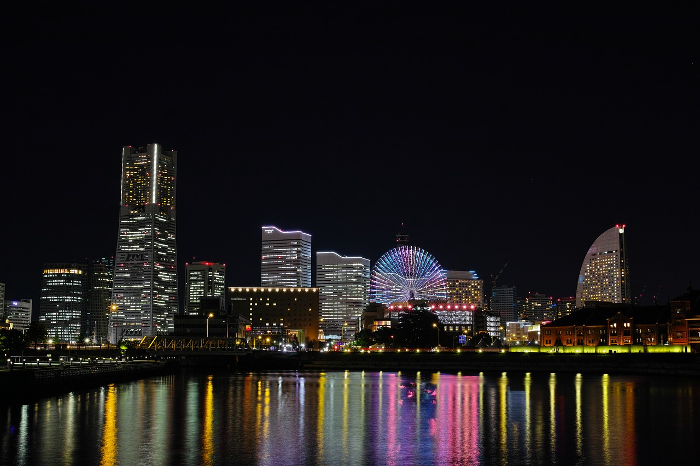

Yokohama
Yokohama, capitale de la préfecture de Kanagawa, est la deuxième ville la plus peuplée du Japon avec 3,7 millions d'habitants. Située à 40 kilomètres au sud de la capitale, dans la baie de Tokyo, elle abrite le port le plus important de l'archipel. Développée dès la seconde moitié du XIXe siècle pour les échanges internationaux, Yokohama dispose de nombreux atouts touristiques et culturels. À proximité et tout aussi ancien, le quartier Motomachi vous transportera dans le temps : résidence des premiers Occidentaux installés au Japon, il accueillit ensuite les troupes d’occupation américaines à l’issue de la Seconde Guerre Mondiale. Aujourd’hui c’est un quartier commerçant qui cherche à se doter d’une image à la fois chic et moderne.
Autre incontournable de Yokohama, ses entrepôts de briques rouges, ou Yokohama Akarenga Soko, sont les vestiges des anciens entrepôts douaniers de la fin du XIXe siècle. Aujourd’hui, les bâtiments et le parc attenant accueillent des espaces communautaires et des boutiques variées.
La cité est principalement connue pour son quartier chinois, Chukagai, le plus grand du pays. La flamboyante "Porte de la Bienveillance" donne accès à plus de 300 boutiques et restaurants chinois, essentiellement spécialisés dans la cuisine de Canton. Les célébrations du Nouvel an chinois, en février, sont l’occasion de merveilleux défilés et danses du lion et du dragon.
Dans le quartier de Minato Mirai 21, haut-lieu des loisirs et du shopping, la Landmark Tower, une des plus hautes tours du Japon, abrite l'observatoire Sky Garden dont la vue à 360° est saisissante, et permet par temps clair d’apercevoir le mont Fuji. Cette zone totalement contemporaine propose également la visite de nombreux espaces dédiés à la culture, dont le Musée d’art de Yokohama.
Plus traditionnel, au sud-est de la ville se trouve le Sankei-en, un immense jardin japonais faisant face à la baie de Tokyo. Organisé autour d'un vaste étang, il rassemble dix-sept bâtiments historiques, rapportés de tout le Japon, dont la pièce maîtresse, une pagode de trois étages, fut construite pour le temple Tomyo-ji de Kyoto en 1457.
Depuis quelques années, la ville de Yokohama est associée à Pokémon. Chaque été, la célèbre franchise de culture populaire japonaise investit le centre-ville avec différentes animations, notamment une grande parade de Pikachu au mois d'août, ainsi que des décorations dans la gare JR et alentour.
Enfin, à la nuit tombée, Yokohama offre un superbe paysage urbain, que l’on peut admirer au cours d’une balade à pied sur le front de mer, ou depuis l’un des petits bateaux de croisières sillonnant régulièrement la baie.